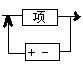
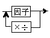
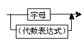
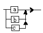
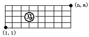
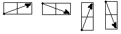
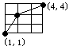
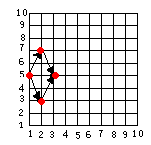

注意：解析和源程序均为OIBH站长刘汝佳所写，疏漏在所难免，但至少程序均通过了比赛时使用的测试数据， 所以还是可以一看。 一.在N*N的棋盘上(1<=N<=10)填入1,2,...N*N共N*N个数,使得任意两个相邻的数之和为素数.(30%) 例如,当N=2时,有
|
1 |
2 |
|
4 |
3 |
其相邻数的和为素数的有:1+2,1+4,4+3,2+3 当N=4时,一种可以填写的方案如下:
|
1 |
2 |
11 |
12 |
|
16 |
15 |
8 |
5 |
|
13 |
4 |
9 |
14 |
|
6 |
7 |
10 |
3 |
在这里我们约定:左上角的格子里必须放数字1 程序要求: 输入:N 输出:若有多种解,则需输出第一行,第一列之和均为最小的排列方案;若无解,则输出"NO!" [分析] 本题的题意有一点不明确。"第一行，第一列之和均为最小"。这是不一定能够达到的要求。 这里，我理解成，第一行之和最小的情况下第一列之和最小。 典型的搜索问题，我就不多说了。自上而下，自左向右搜索，每次仅检查与上方，左方 （如果存在的话）之和是否为素数。利用数组used确定数字是否已经用过。 二.代数表达式的定义如下:(30%)
| 代数表达式: |  |
| 项: |  |
| 因子: |  |
| 字母: |  |
例如,下面式子是合法的代数表达式:
a;
a+b*(a+c);
a*a/(b+c);
下列式子是不合法的代数表达式:
ab;
a+b*(c+d); {因子中无字母d}
程序要求:
输入:输入一个字符串,以";"结束,(";"本身不是代数表达式中字符,仅作为结束符号)
输出:若表达式正确,则输出:"OK";
若表达式不正确,则输出"ERROR",及错误类型
错误类型约定:
1.式子中出现不允许的字符;
2.括号不配对;
3.其他错误
例如:输入a+(b);
输出:OK
例如:输入a+(b+c*a;
输出 error 2
[分析]
个人认为比较好的题目，不难，但是要考虑全面却不大容易。
第一类错误好说，可以出现的字符只有(除了最后的‘;’)：a,b,c,+,-.*./,(,)。
注意，如果不在末尾的';'也是非法的。
第二类用栈来实现。自左向右看，遇到左括号就入栈（其实只修改指针就可以了）,右括号就出栈。
出栈时栈空，或者最后栈非空都是error 2
第三类情况比较多。例如存在以下子字符串的都是此类错误：
(紧跟运算符，如a+(+b)，运算符紧跟)，如 (c/)*b
两个运算符连在一起，如++,-/等。
两个字母连在一起，如ab
字母以后紧跟(,如a+b(c+d), )以后紧跟字母，如(c-d)a+b
两个括号连在一起，如(),((,)), 因为括号只能在作为因子时才能使用。
三.骑士游历:
设有一个n*m的棋盘(2<=n<=50,2<=m<=50),如下图,在棋盘上任一点有一个中国象棋马,

马走的规则为:
1.马走日字 2.马只能向右走
即如下图所示:

任务1:当N,M 输入之后,找出一条从左下角到右上角的路径.
例如:输入 N=4,M=4

输出:路径的格式:(1,1)->(2,3)->(4,4)
若不存在路径,则输出"no"
任务2:当N,M 给出之后,同时给出马起始的位置和终点的位置,试找出从起点到终点的所有路径的数目.
例如:(N=10,M=10),(1,5)(起点),(3,5)(终点)

输出:2(即由(1,5)到(3,5)共有2条路径)
输入格式:n,m,x1,y1,x2,y2(分别表示n,m,起点坐标,终点坐标)
输出格式:路径数目(若不存在从起点到终点的路径,输出0)
[分析]
第一问可以构造(搜索当然也可以)
第二问随便了，递推或者搜索都可以，反正规模不大。我当然是推荐递推了。
Copyright OIBH http://oibh.yeah.net